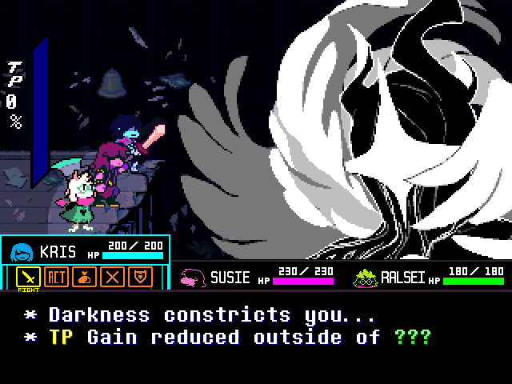
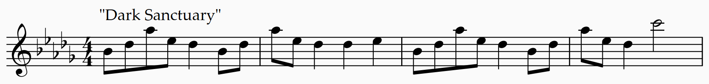

GUARDIAN
This track is during the fight against the Titan, the final boss for Deltarune chapter 4. This is the 68th track in the Deltarune chapter 3 & 4 soundtrack. The BPM is 140, the keys it has are C-sharp minor and C minor, with a time signature of 4/4. This fight is difficult with hope on the line. Which reflects in the track.
This track have 2 leitmotif, Don't Forget and Dark Sanctuary.

Don't Forget leitmotif

6 out of 28 (excluding unused tracks) of the tracks that have this leitmotif right now are:
- "Don't Forget":
- "Field of Hopes and Dreams" (At 0:53-1:35, 2:17-2:26, & 2:33-2:41):
- "Another day in hometown" (At 0:41-1:11):
- "GUARDIAN" (At 1:04, 1:11, 2:29, 2:36, 2:57, 3:03, 3:11, & 3:17):
- "With Hope Crossed On Our Hearts " (At 0:03-0:07, 0:14-0:18, 0:27-0:31, 0:38-0:42, & 1:02-1:06):
- "Dog Check" (At 0:35-0:42):
Dark Sanctuary leitmotif

All the tracks that have this leitmotif are:
- "Dark Sanctuary":
- "From Now On (Battle 2)" (At 0:00-0:29, 0:36-1:05, & 1:20-1:34):
- "Ever Higher" (At 0:13-0:21, 0:30-0:39, & 0:48-0:57):
- "Crumbling Tower" (At 0:33-0:54, 0:58-1:02, 1:07-1:27, 1:31-1:36 (variation), 1:40-2:14, & 2:30-2:47):
- "SPAWN" (At 0:14-0:32, 0:35-0:39 (variation)):
- "GUARDIAN" (At 0:13-0:27, 0:58-1:25, 1:39-1:53, & 2:23-3:19):
- "Neverending Night":
- "annoying_prophecy":
Reference
- "GUARDIAN.” Deltarune Wiki, 28 Feb. 2026, deltarune.wiki/w/GUARDIAN.
- “Leitmotifs.” The Deltarune Wiki, 4 Apr. 2026, deltarune.wiki/w/Leitmotifs#Dark_Sanctuary
- “Leitmotifs.” The Deltarune Wiki, 4 Apr. 2026, deltarune.wiki/w/Leitmotifs#Don't_Forget